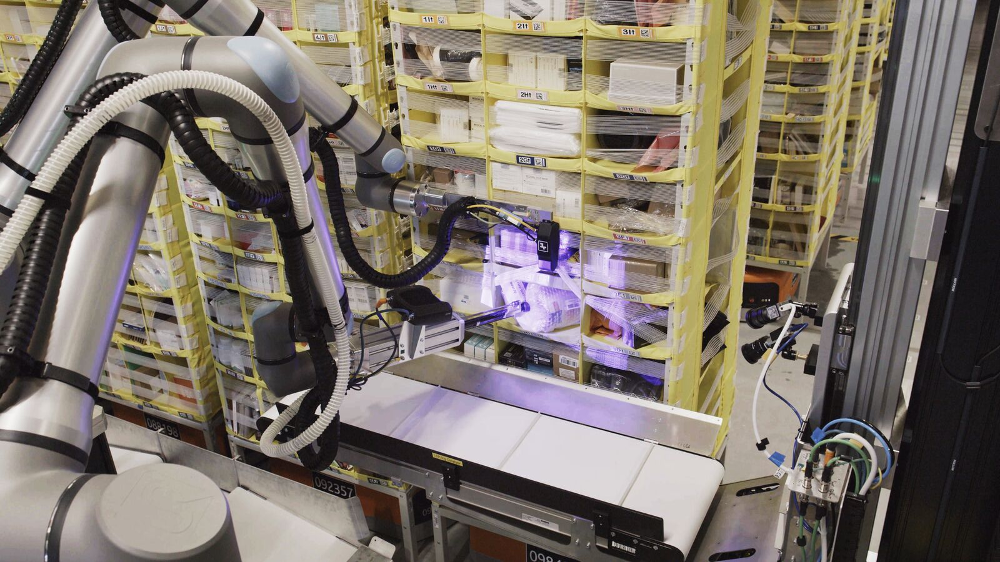
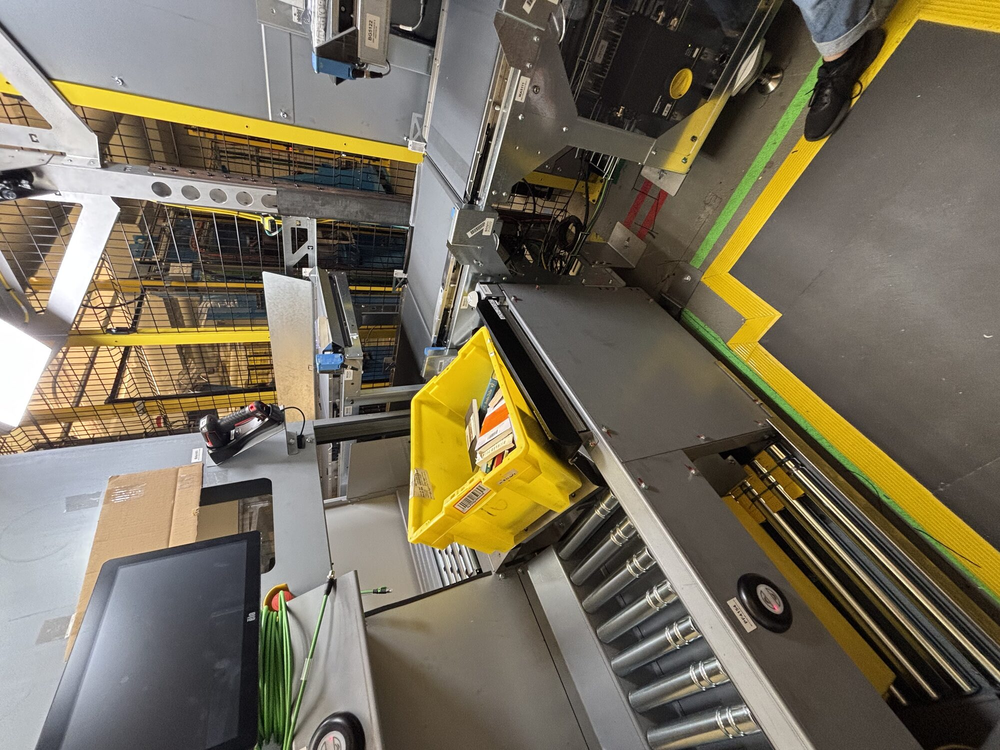
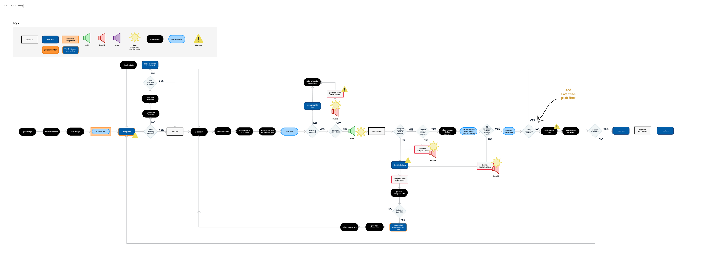
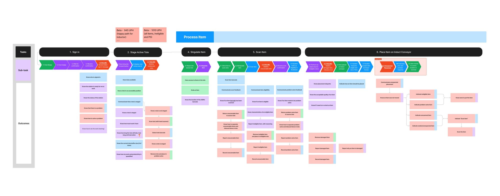
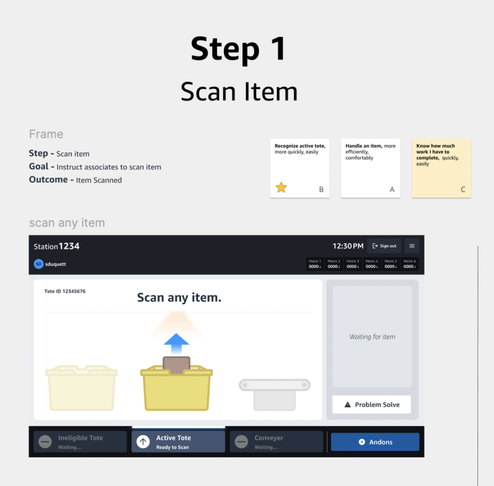
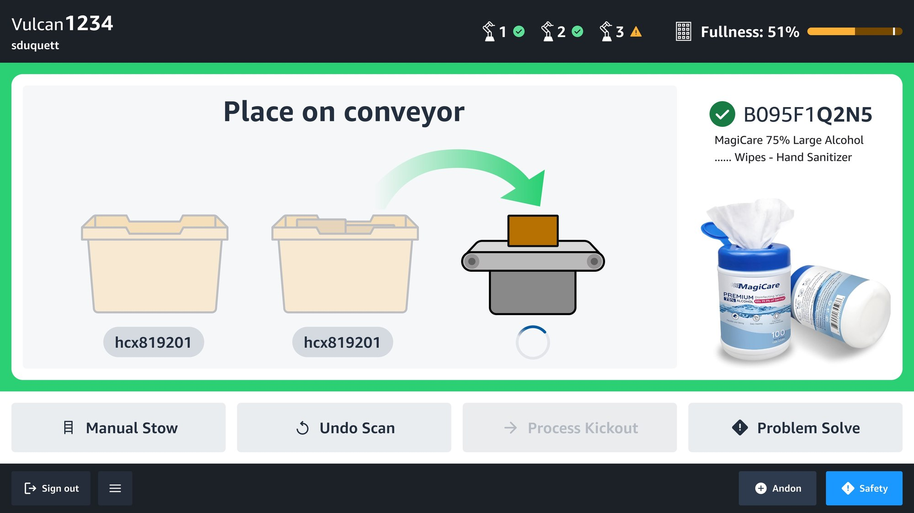
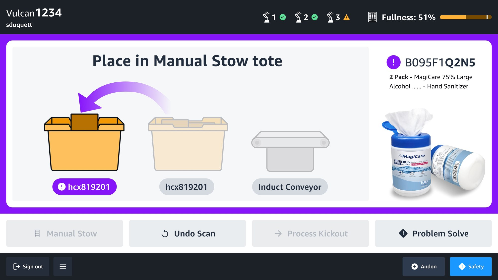

Case 03 · Amazon Robotics
Vulcan is Amazon's first robot with a sense of touch. It picks and stows roughly 75% of items at the fulfillment center where it operates — but it still depends on a human operator to feed and validate every item inducted. I led the operator-side UX for the Vulcan Stow workcell at the Spokane site.
Senior UX Lead — operator-side UX
Robotics, hardware, ops, program
2024 – Present
Vulcan automates part of the stow workflow. While the robot stows items into pods, a human still has to feed it — scanning each item, checking eligibility, and routing the ones the robot can't safely handle.
Vulcan stows inventory into the top and bottom rows of storage pods so associates can stay in their power zone — no ladders, no bending.
A human feeds the robot: scans each item, checks eligibility, and re-routes the ones Vulcan can't safely or successfully stow.
Every item is a decision: is this Vulcan-eligible? Is it damaged? Is the barcode readable? Get it wrong and a defect lands on the storage floor.


I led the operator-side UX for Vulcan Stow — building a shared outcome framework (CXOs) that made every human task and every exception path explicit across Amazon Robotics programs.
Without a shared model for operator outcomes, failure-state UX consistently lost prioritization to happy-path features — across every program, not just Vulcan.
I defined Customer eXperience Outcomes (CXOs) — data-supported statements describing what an operator needs to accomplish at each step of a workflow, including failure states.
One example of a CXO
04Seek time— KPI
… easily
… quickly— modifiers
Associates— roleEvery operator workflow begins as a happy-path sequence — but the real determinant of throughput is how the operator handles the failure states the happy path doesn't cover.
Sidelining an ineligible item and surfacing a problem-solve item are distinct sub-tasks — each with its own outcomes, UI, and recovery path.
Design for failure, not around it.
From the workflow, I built a touchpoint diagram identifying every component required to support an outcome — UI screen, UI button, physical button, hardware component, light or audio cue. High-risk markers call out where a single missed scan becomes a downstream defect.

I facilitated cross-functional body-storming workshops to enumerate the outcomes an operator needs to achieve — at every task and every exception. Participants: UX, product, engineering, ops, and operator SMEs from each affected program.
Starting from the workflow diagram, each task becomes a column and each operator outcome becomes a row — happy-path and exception alike:

Result: a grounded inventory of operator outcomes, including all failure and recovery states — scored against measurable speed and desirability targets.
A single scan-item failure path tied directly to the program KPI of 1,000 units per hour. Mapping the exception sub-tasks let product and engineering invest in failure-state UX before launch — not after rework.
CXOs prioritize and define design that enables users to meet KPIs. I worked alongside contract designers on the UI with one rule: every feature has to help the user achieve a specific, named outcome — or it doesn't ship.

CXOs also verify that users can complete an expected action and meet KPIs. On-floor research with the new station revealed scan-item outcomes that weren't being achieved — operators visibly scratching their heads, unsure what action to take next.
The research findings fed directly into the next UI iteration — two distinct, color-coded scan-feedback states that make the next operator action explicit: green directs Vulcan-eligible items to the conveyor; purple routes ineligible items to a manual-stow tote. Plain language, intuitive visuals, no more guesswork.


The CXO framework became the connective tissue between operator research and feature-level product decisions across Amazon Robotics.
Mapping workflows and their exceptions in a measurable, shared format turned operator UX from a feature-by-feature negotiation into a strategic input to robotic systems design.
Get in touch
Currently exploring senior & staff-level UX roles in systems thinking and service design.